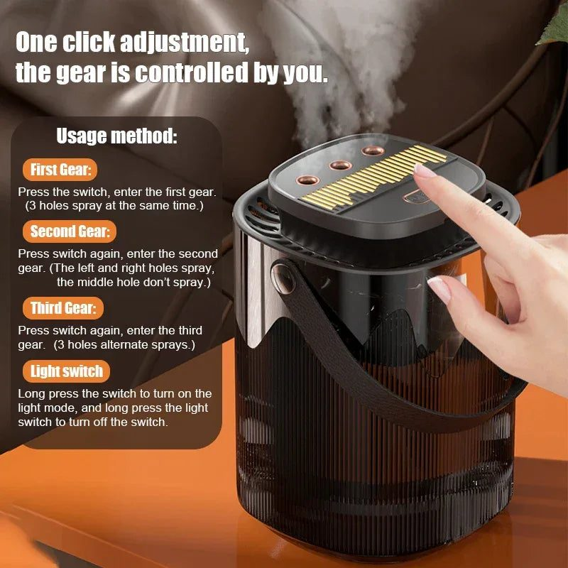
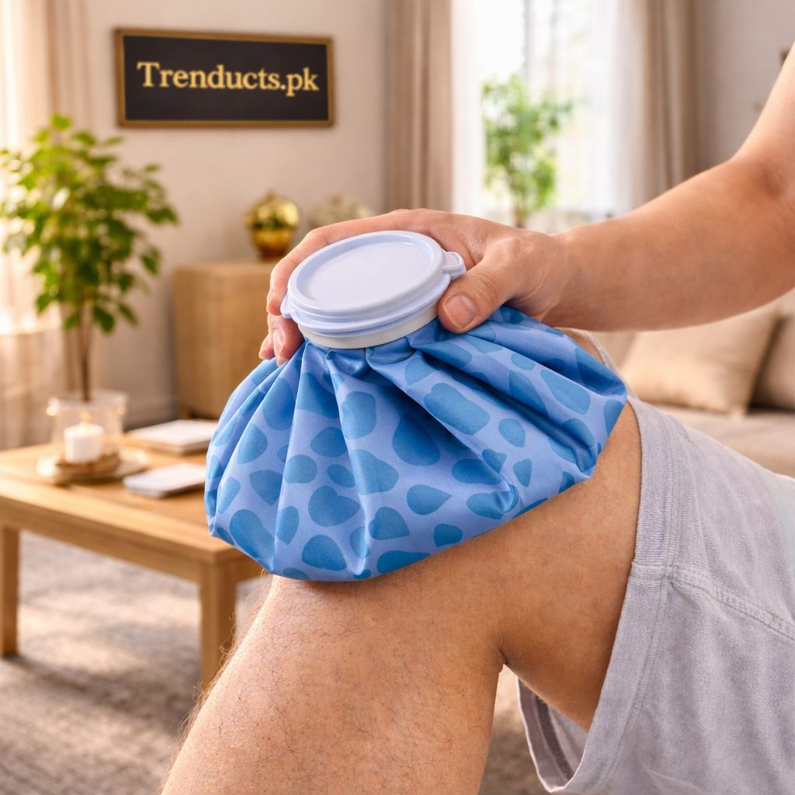
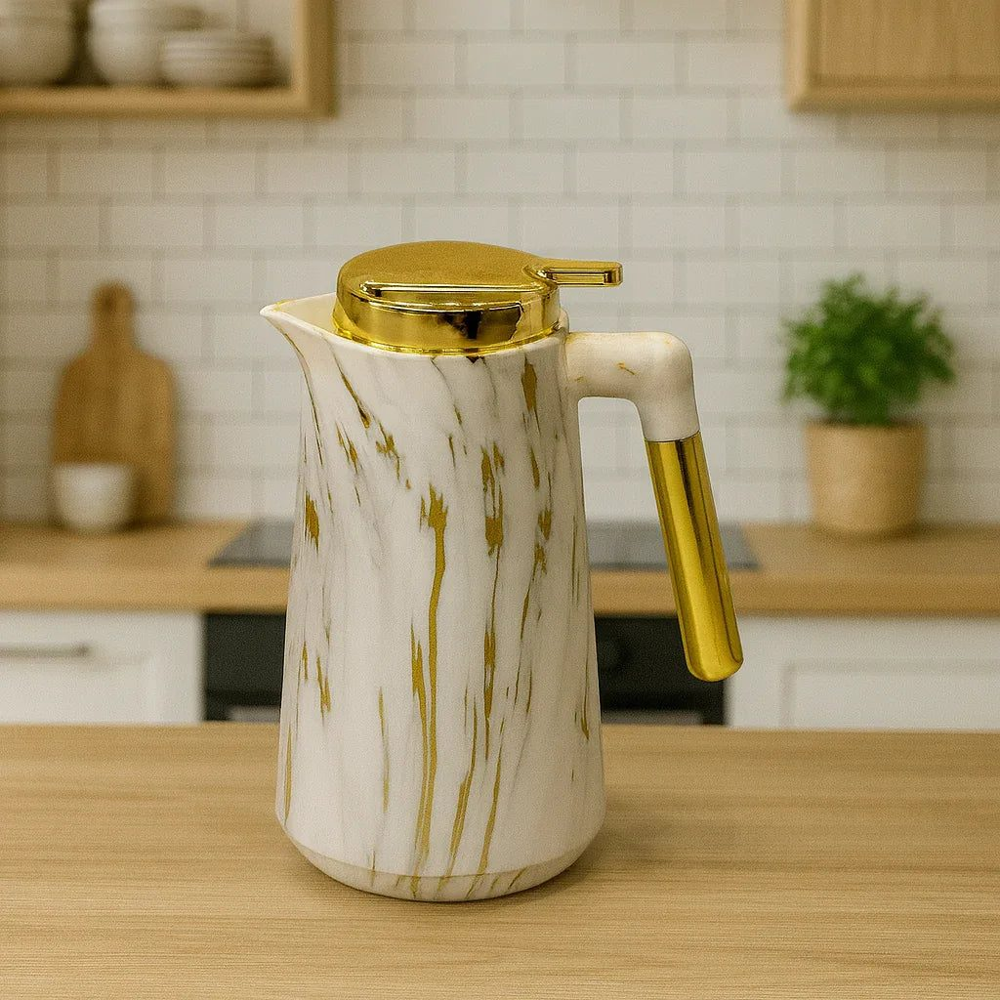

Winter in Pakistan varies a lot by region. Karachi gets a mild, short season, while Lahore and much of Punjab face foggy, smoggy cold, and Islamabad, Peshawar, Quetta and the northern areas get properly cold nights. Wherever you live, a little preparation in October and November makes the season more comfortable and safer.
Here is a practical checklist.
Heating safety first
Gas heaters are common in many homes, and they need attention every year.

- Have heaters checked before the season for leaks and proper burning.
- Never sleep with a gas heater running in a closed room. Gas heaters can produce carbon monoxide, which has no smell and can be deadly.
- Keep a window slightly open for ventilation when a heater is on.
- Keep curtains, bedding and clothes well away from heaters.
- Consider a carbon monoxide detector for rooms with gas heaters.
Electric heaters should be plugged directly into a wall socket rather than an overloaded extension board. Switch them off before leaving the room.
Deal with dry air
Heaters and cold weather dry the air, which can leave skin dry, lips cracked and throats scratchy. A humidifier adds moisture back into a bedroom, and some double as essential oil diffusers for a pleasant scent. Clean it regularly according to the instructions so it does not grow mould. Drinking enough water also matters in winter, when people often drink less.
Bedding and clothes
- Take quilts, razais and blankets out of storage and air them in the sun for a day.
- Swap summer bedsheets for warmer flannel or cotton ones.
- Bring winter clothes forward in the wardrobe.
- Check for moth damage on woollens and shawls.
Comfort for cold nights
A hot water bag at the foot of the bed makes getting into a cold bed much nicer, especially for children and elderly family members. Reusable bags that work for both hot and cold use are handy all year. Fill with hot, not boiling, water, close the stopper firmly and wrap it in a cover or towel.

Warm drinks ready
Winter evenings are made for chai, kahwa, soup and doodh patti. A thermal flask keeps tea hot for hours, so you do not need to keep boiling the kettle. It is also useful for long drives to visit family and for night-time feeds or medicines.
Windows and doors
Check windows and doors for draughts. Simple draught stoppers or weather strips reduce cold air coming in. Thick curtains add a layer of insulation; close them in the evening to keep warmth in.
Smog season
In Lahore and other Punjab cities, winter smog is a serious concern. Keep windows closed on bad air days, check the air quality before outdoor activities and keep masks at home. Wipe dust from windowsills and surfaces more often.

Geysers and hot water
Check that your geyser is working and has been serviced. Gas pressure often drops in winter, so plan baths and laundry at times when pressure is better in your area. Insulating exposed hot water pipes helps keep water warm.
Fog and travel
For those who drive in Punjab during foggy months, check car lights, wipers and tyres. Keep a blanket and a flask of water in the car on long trips.
Plan for gas load-shedding
In many cities, gas supply is limited at certain hours in winter. Find out your area's pattern and plan cooking and heating around it. Keep an electric kettle, an electric heater or extra blankets as backup, and cook larger batches when gas is available. A thermal flask filled in the morning means hot tea is still available when the gas is off.
Stocking up for the season
For humidifiers, hot water bags, thermal flasks and other winter essentials, Trenducts has new arrivals and home essentials delivered across Pakistan.
A warm, safe season
With heaters checked, bedding aired and a few comforts in place, winter becomes a season to enjoy, with long evenings, hot chai and family gathered close.